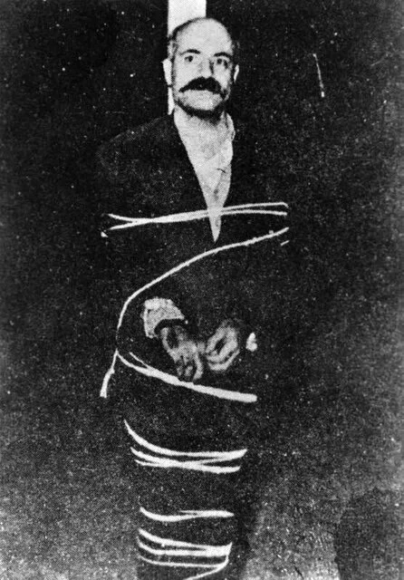
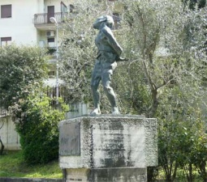
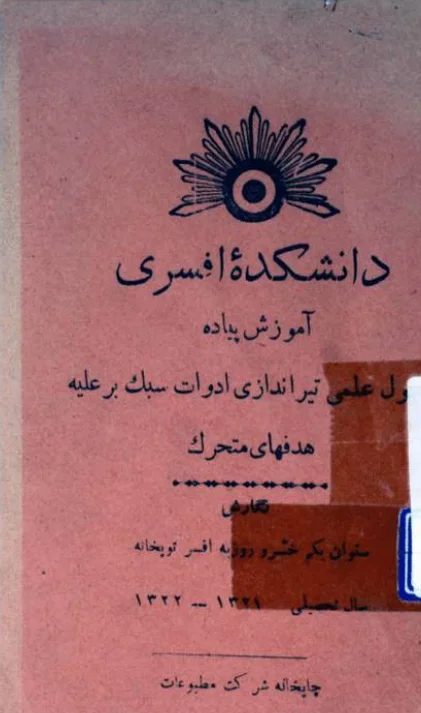
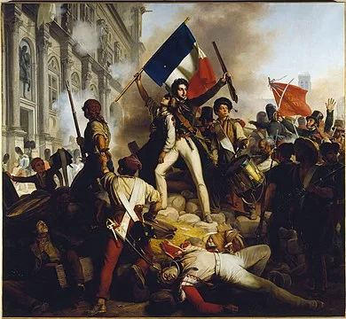

«ناشکفته پژمرده شد»: خسرو روزبه
 امیر اصغری
امیر اصغری

خسرو روزبه از کسانی است که بعضی او را یکسره سفید میبینند و بعضی یکسره سیاه. عباس میلانی او را «اسطورهٔ حزب توده» لقب داده است، تندیسی از او در هنگام تیرباران در شهری در نزدیکی رم قرار دارد، و احمد شاملو کنار این تندیس عکس یادگاری دارد و «خطابهٔ تدفین» را به یاد خسرو روزبه سرود، اما بعدها شعر را نگه داشت و تقدیم آن را پس گرفت.

پیشنهاد نام او برای مجموعهٔ «او کیست؟» (مجموعهای که سالها پیش شروع شد و میتوان آن را بذر «آدمها و ریاضیات» دانست) هم با همین تردید همراه بود: افسری سرشناس که تودهای شد و اعدام شد و به همین هم معروف بود، ولی پیشنهاددهندهٔ نام او، با ناباوری از اینکه در ویکیپدیا او را ریاضیدان خواندهاند، درخواست تحقیق و نوشتن دربارهٔ او را داشت.
اما تحقیق و نوشتن دربارهٔ او از همین رو دشوار بود. دربارهٔ او آنقدر نوشتهاند، و او را آنقدر ساختهاند و ویران کردهاند، که دیگر یافتن حقیقت آسان نیست. پس در ادامه، تا جایی که ممکن است، تنها از نوشتههای خود او و از وقایع، و نه از تعبیرهایی که بر وقایع افزوده شده، استفاده میکنم، و در ناحیهٔ خاکستری او میمانم؛ جایی که ریاضیات راهی به آن میگشاید.
کمی زندگینامه
خسرو روزبه در شهریور ۱۲۹۴ (اوت ۱۹۱۵) در ملایر به دنیا آمد و در بیستویکم اردیبهشت ۱۳۳۷ تیرباران شد. احتمالاً در لحظهٔ تیرباران به این فکر میکرد ای کاش علاوه بر نوشتن کتابی دربارهٔ اصول علمی تیراندازی به اهداف متحرک، کتابی هم دربارهٔ تیراندازی به اهداف غیرمتحرک نوشته بود. آخرین دفاعیات او در دادگاهی که در نهایت حکم به اعدام او داد، شاید شما را هم به این تفکر سورئال سوق دهد:
دادگاه: آری این خسرو روزبه است که با بیپروایی ناشی از بیشرفی و فقدان وجدان و خلاص بودن از قید هر گونه خصلت انسانی میگوید: قتل هر کسی را که با مرام و رویهام مخالف بوده و باشد واجب شمرده و میشمارم
خسرو روزبه: به دو دلیل میتوانم ادعا کنم که جمله من نیست. دلیل اول. کلمهی «رویه» یک کلمه فارسی و درست نیست و معلوم نیست چه کسی آن را برای نخستین بار بهکار برده است و بعداً متداول گردیده و حتی وارد قوانین هم شده است. لغت صحیحی که به جای آن میتوان به کار برد، واژهی زیبای «روش» است که حاصل معنی مصدر از فعل «رفتن» است. من عادتاً هرگز کلمهی «رویه» را به کار نمیبرم و اگر تحت تأثیر دیگران اشتباهاً آن را بهکار ببرم فوراً گفتهی خودم را تصحیح میکنم
آخرین دفاع خسرو روزبه در دادگاه تجدید نظر نظامیدلیل دومی هم میآورد که از دلایل عقیدتی است، و جلسهٔ بعدی دادگاه تجدیدنظر نظامی را چنین آغاز میکند:
من اگر بگویم احساس امنیت قضایی نمیکنم سخنی بگزاف نگفتهام … بین واژههای فرهنگستان بندرت به لغتهای مناسبی برمیخوریم، ولی واژه دادگاه تصادفاً یکی از لغتهای خوب آن است. کلمه «دیوان حرب» و «محکمه» موجب چندش متهم میشود، ولی واژه دادگاه حس اعتماد و عدالت را در روح او القا میکند
آخرین دفاعروزبه در همین دفاع، زیر عنوان «من کیستم»، شرحی از کودکی خود میدهد: اینکه با همهٔ تلاشهای پدر، خانواده در تنگنای مالی بود؛ اینکه برای قدردانی از پدر شبانهروز درس میخواند و دورهٔ ششسالهٔ دبیرستان را در چهار سال، با معدل ۱۸٫۵۵، به پایان رساند؛ اینکه همیشه در ریاضیات خوب بود، همهٔ نمرههای ریاضیاش بیست بود، به دیگران، حتی به شاگردان سالهای بالاتر و گاه به معلمان ریاضیاش، کمک میکرد و معلم زیر ورقهاش مینوشت «صدقنا»؛ و سرانجام اینکه:
در کلاس پنجم متوسط که بودم رسالهای در زمینهی حل معادلات درجه چهارم و درجات عالی از طریق تقسیم مسلسل نوشتم و به کمک آن مسایل شیخ بها را که به معادلات درجهی عالی منتهی میگردد حل کردم … بعداً هنگامی که در دانشکده فنی دانشگاه تهران در رشته الکترونیک مکانیک تحصیل میکردم این رساله را تکمیل نموده و با اضافه کردن راهحلهای گرافیک و تدوین جداول ویژه نقایص آن را برطرف ساختم، ولی اکنون نمیدانم در جریان سالهای اخیر به چه سرنوشتی دچار گردیده است
آخرین دفاعجملهٔ بعدی، جملهٔ کلیدی داستان خسرو روزبه است:
نظر باینکه شرایط مادی پدرم اجازه نمیداد در شعبه ریاضیات دانشکده علوم تحصیل کنم، تصمیم گرفتم وارد خدمت ارتش شوم
آخرین دفاعداستان او را پیش از رسیدن به روز دادگاه میتوان در کتاب خود او، «اطاعت کورکورانه»، خواند؛ جایی که داستان زندگی و مبارزاتش را با نگاهی انتقادی به دورهٔ سلطنت رضاشاه، یا آنچه خود «دوران دیکتاتوری و انحطاط ملت ایران» میخواند، گره میزند.
خسرو روزبه در ۱۳۱۶ دانشکدهٔ افسری را به پایان رساند و تا ۱۳۱۸، افزون بر تدریس در همان دانشکده، دربارهٔ اصول علمی تیر ضدهوایی پژوهش کرد. در آغاز ۱۳۱۸ به اهواز منتقل شد، انتقالی که به گفتهٔ خودش «بیشتر حالت تبعید داشت»، اما دلیلش را نمیگوید، چون «شرح مفصل آن ملالآور است». در مهر ۱۳۱۸ به دانشکدهٔ افسری بازگشت و شش سال در آنجا درس داد. در همین سالها، به میل خود، سالهای اول و دوم دانشکدهٔ فنی دانشگاه تهران را گذراند، کتابهای بسیاری نوشت، و برای خدمات علمیاش، به پیشنهاد فرماندهی دانشکدهٔ افسری، نشان دانش گرفت. سخنرانیهای غیرعلمی او برای دانشجویان از ۱۳۲۰ به بعد، از جمله «اندرز به فارغالتحصیلان ۱۳۲۰–۱۳۲۱»، با معنای معمول اندرز سازگار نبود، و روشن بود که دیر یا زود به سراغش خواهند آمد. خودش نیز این را میدانست. در ۱۳۲۴، در همان روزی که قرار بود بازداشت شود، «ترک خدمت را به خدمت ننگین» ترجیح داد، و از آن پس تا پایان عمر یا پنهان بود، یا در زندان، یا در حال فرار از زندان.
اصول علمی تیراندازی ادوات سبک بر علیه هدفهای متحرک
روزبه در آن شش سالِ دانشکدهٔ افسری، و حتی پس از آن، نوشتههای بسیاری پدید آورد. در فهرست کتابهایش (آنهایی که خود نام میبرد) کتابی دوجلدی هست که از عنوانش پیداست کتابی ریاضی است: «ریاضیات عالی تخصصی رستهٔ توپخانه». هیچیک از این دو جلد را نیافتم. اما در کمال شگفتی، کتابی که یافتم از نظر ریاضی به اندازهٔ کافی هیجانانگیز بود: «اصول علمی تیراندازی ادوات سبک بر علیه هدفهای متحرک»، یکی از چند کتابی که دربارهٔ توپ و تانک در همان دورهٔ ششساله نوشت.
نخست اینکه مقدمهٔ همین کتاب، در کنار «اطاعت کورکورانه»، تحول خسرو روزبه را بهخوبی نشان میدهد: از کسی که قرار است «از طریق تألیف و ترجمه و اکتشاف به جامعه خدمت کند» به کسی که «طوفان عظیمی اعصاب و روحش را تحت استیلای خود میگیرد و فکر محدود خدمتهای جزیی را کنار میگذارد و تصمیم میگیرد کار را از ریشه اصلاح کند تا به بدبختی میلیونها نفر از هموطنانش پایان دهد» (از کتاب آخرین دفاع).
تا آنجا که به سلامت عبارات لطمه وارد نیامده کوشش گردیده است که از واژههای نو و مصوبه فرهنگستان استفاده شود
اصول علمی تیراندازی ادوات سبک بر علیه هدفهای متحرکایرانی در مدت کمی خائن را از خادم و طالح را از صالح تمیز میدهد. ایرانی تمام مسببین بدبختی و بیچارگی خود را میشناسد و در روز انتقام کلههای بیمغز و سرهای پرکاه آنها را به بالای دار میفرستد
اطاعت کورکورانهتصور کنید دغدغهٔ کسی از «سلامت عبارات» به فرستادن «سرهای پرکاه» به «بالای دار» تغییر کند. دلیلش هرچه باشد، تاب آوردن چنین تغییری برای خود آن آدم آسان نیست. کوشیدم «اطاعت کورکورانه» را بخوانم. حدس میزنم اگر در میانهٔ انقلاب ۵۷ آن را خوانده بودم، بسیار با آن همدل میشدم؛ اما اکنون نتوانستم با آن ارتباط برقرار کنم. کتاب بیشتر به خطابهٔ آدمی خشمگین میماند؛ نه نثر زیبایی دارد و نه استدلال محکمی. با این همه، از نظر تاریخی، و بهویژه به سبب نام بردن از افراد بسیار، به نیکی یا به بدی، اهمیت دارد. در مقایسه، دفاعیات او بسیار خواندنیترند. برای نمونه، این جمله را بسیار دوست دارم:
اینها قصه نیست، داستان هزار و یک شب نیست، محصول خیالبافی یک قلندر بیسواد نیست، هذیان و گفتههای تبآلود نیست، بلکه واقعیت زندگی اجتماعی کشور ما و هر کشور سرمایهداری در هر گوشهی جهانست
آخرین دفاع
کتاب دو بخش، یا به تعبیر روزبه دو «پاره»، دارد. پارهٔ یکم دربارهٔ تیر ضدهوایی با ادوات سبک است و پارهٔ دوم دربارهٔ تیر ضدارابه. هر پاره با تعریفهای کلی و بیان اهمیت مسئله آغاز میشود و سپس شرایطی را بررسی میکند که در آنها، به جای ادوات سنگین، ناچار از ادوات سبک (مانند مسلسل) استفاده میشود. گام بعدی شرح دشواری مسئله است: هدف تنها مدت کوتاهی در منطقهٔ تیر است و افزون بر آن حرکت میکند و میتواند تنظیم تیر را بر هم بزند. سپس ریاضیاتِ همهٔ متغیرها را یکییکی بررسی میکند: از فاصلهٔ مسلسل تا هدف، سرعت هدف، تندی باد و زاویهٔ آن با افق، تا زاویهٔ مسلسل با زمین. پارهٔ یکم بیشتر مکانیک است.
بخش شگفتانگیز، پارهٔ دوم کتاب است، دربارهٔ تیر ضدارابه. در این بخش است که روزبه از حساب احتمالات استفاده میکند. حساب احتمالات به طور کلی بسیار دیر در ایران جدی گرفته شد. برای نمونه، تا سال ۱۳۲۱، یعنی سال انتشار کتاب روزبه، در میان درسهای دانشسرای عالی نبود. (این تا سالی است که من بررسی کردم؛ نمیدانم پس از آن چه شد و کی، اگر اصلاً، وارد شد.) گمان نمیکنم در دانشکدهٔ فنی دانشگاه تهران نیز تا سالها بعد تدریس شده باشد. اصولاً یکی از پرسشهای امروز این است که آموزش احتمال کی و کجا در ایران آغاز شد. به هر روی، به نظر میرسد روزبه احتمال را از یکی از آن سه هزار کتاب انگلیسی آموخته باشد که همهٔ پولش را صرف خریدشان کرده بود (ماجرای این سه هزار کتاب در آخرین دفاع آمده است). حتی اگر احتمال را در کلاسی آموخته بود، که بسیار بعید میدانم، ممکن نیست مسئلهای را که با آن حل کرده در کلاسی آموخته باشد.
مسئلهٔ تیر توقیف
«تیر توقیف» اصطلاحی نظامی است برای تیرهایی که قرار است ارابههای جنگی دشمن (همان تانک) را از کار بیندازند. نکتهٔ مهم این است که زاویه و جهت جنگافزار از پیش تعیین میشود و تغییر دادن آنها آسان نیست؛ چون هدف متحرک است و فرصت تنظیم دوباره نیست. از این رو، معمولاً چند جنگافزار به کار میرود که هر یک از پیش تنظیم شده است: منطقهای که ارابههای دشمن در آن حرکت میکنند به چند ناحیه تقسیم میشود، جنگافزارها به چند دسته، و هر دسته به یکی از ناحیهها اختصاص مییابد. مسئله این است: اگر سرعت ارابه و ناحیهای را که در آن میتوان به آن شلیک کرد بدانیم، به چند جنگافزار نیاز داریم تا به اندازهٔ کافی مطمئن باشیم که پیش از خروج ارابه از منطقهٔ تیر، دستکم یکی از تیرها به آن اصابت میکند؟
فرض کنید احتمال اصابت تیرِ یکی از جنگافزارها به ارابه \(p\) باشد و احتمال اصابت دستکم یکی از \(n\) تیر به ارابه \(P\). احتمال اینکه هیچیک از \(n\) تیر به ارابه نخورد برابر است با
\[(1-p)^n\]در نتیجه احتمال اینکه دستکم یکی از آن \(n\) تیر به ارابه بخورد برابر است با
\[1-(1-p)^n\]و این همان \(P\) است:
\[P=1-(1-p)^n\]از سوی دیگر میدانیم
\[e^x=1+\frac{x}{1}+\frac{x^2}{1\times 2}+\frac{x^3}{1\times 2\times 3}+\frac{x^4}{1\times 2\times 3\times 4}+\cdots\]در نتیجه
\[e^{-p}=1-p+\frac{p^2}{1\times 2}-\frac{p^3}{1\times 2\times 3}+\frac{p^4}{1\times 2\times 3\times 4}-\cdots\]پس به تقریب میتوان نوشت
\[e^{-p}\approx 1-p\]این را در عبارت \(P\) قرار میدهیم:
\[P=1-(1-p)^n\approx 1-e^{-np}\]با جابهجا کردن جملهها و گرفتن لگاریتم طبیعی خواهیم داشت
\[np=\ln\left(\frac{1}{1-P}\right)\]اکنون نکتهٔ جالب پیش میآید. \(p\) احتمال اصابت تیرِ یک جنگافزار به ارابه بود. با تعبیر رایج احتمال، اگر \(np\) را \(N\) بنامیم، معنایش این است که از \(n\) تیرِ شلیکشده، \(N\) تیر به ارابه اصابت کرده است:
\[N=np \qquad N=\ln\left(\frac{1}{1-P}\right)\]این به چه کار میآید؟ فرض کنید میخواهید با اطمینان ۹۹ درصد ارابه را از کار بیندازید. پرسش این است که دستکم چند تیر باید شلیک کنید. آنچه نمیتوانید تغییر دهید احتمال اصابت یک گلولهٔ تنها از یک جنگافزار است؛ یعنی \(p\) در اختیار شما نیست. (البته میتوانید جنگافزار را چنان تنظیم کنید که این احتمال بالا برود؛ اما پس از تنظیم، دیگر ثابت است.) پس آن ۹۹ درصد مربوط به \(P\) است. از آن \(N\) به دست میآید، و با قرار دادن آن در فرمول دیگر، \(n\). اکنون میدانیم در بازهٔ زمانیای که فرصت داریم، چند تیر باید شلیک شود؛ و با دانستن اینکه هر جنگافزار در آن بازه چند تیر میتواند شلیک کند، دربارهٔ شمار جنگافزارها تصمیم میگیریم.
خود روزبه این را به شیوهٔ بلند فکر کردن نوشته است و در میانهٔ آن متغیرهای فراوانی میآیند و میروند. با این همه، این یکی از بهترین نمونههای کاربرد احتمال است که در همهٔ این سالها دیدهام، و به گمانم با تغییر زمینه میتواند نمونهٔ خوبی برای کلاس درس نیز باشد.
یعنی وقتی خسرو روزبه میگوید استعداد ریاضیدان شدن را داشته است، بهراستی داشته است. پرسش مهم این است: اگر او در بیست سالگی کشته میشد، چه میشد؟
اگر خسرو روزبه در بیست سالگی کشته میشد
چرا بیست سالگی؟ چون اواریست گالوا (۱۸۱۱–۱۸۳۲) در بیست سالگی کشته شد، و شباهت میان این دو انکارناپذیر است. همین ابتدا، بهصراحت، بگویم: منظورم این نیست که نتیجهٔ کار ریاضی خسرو روزبه همسطح کار گالوا بود. ریاضیاتی که گالوا پدید آورد دنیای ریاضیات را برای همیشه تغییر داد. اما خسرو روزبه این بخت را نیافت؛ نه لزوماً به سبب انقلابیگری، بلکه بیشتر به سبب شرایط ریاضیِ جامعه. روزبه هفت سال پس از مرگ عبدالغفار اصفهانی به دنیا آمد، یعنی در آغاز دگرگونی جامعهٔ ریاضی و حرکت آن به سوی ریاضیدانِ نمادین. نخستین ریاضیدان جدی و به معنای امروزی ایران، محسن هشترودی، در سال ۱۳۱۶ دکتری گرفت؛ همان سالی که روزبه از دانشکدهٔ افسری فارغالتحصیل شد. مسائلی که گالوا با آنها روبهرو بود با مسائلی که روزبه با آنها روبهرو بود تفاوت داشت. جامعهٔ ریاضی گالوا حل معادلات درجهٔ سه و چهار را پشت سر گذاشته بود و گامهای بسیار دیگری نیز برداشته بود. جامعهٔ ریاضیِ روزبه، اگر بتوان چنین تعبیری به کار برد، همچنان درگیر مسائل «خلاصةالحساب» شیخ بهایی بود. با این همه، این دو آدمِ تنها، در دو جامعهٔ یکسره متفاوت، شباهتهای فراوانی دارند.

گالوا از نظر سیاسی به همان اندازهٔ روزبه پرشور بود. در روزهای انقلاب ژوئیهٔ ۱۸۳۰ میخواست در خیابان باشد، اما مدیر مدرسهاش مانع شد. یک بار بازداشت شد، چون در ضیافتی، دشنه در دست، به سلامتی پادشاه فرانسه جام بلند کرده بود. فردای روزی که آزاد شد، این بار با چند تپانچه، دوباره بازداشت شد. خلاصه، پیوسته در راه زندان میرفت و میآمد. تفاوت اساسی او با روزبه در این بود که در هر رفتوآمد فرصتی ریاضی برایش وجود داشت. (اینکه چندان از آن فرصتها بهره برده نشد، داستان خود را دارد؛ مهم این است که فرصت وجود داشت.) برای نمونه، این فرصت را داشت که ریاضیدانی در اندازهٔ کوشی دو مقالهٔ او را رد کند و پیشنهاد دهد آن دو را یکی کند و با آن در جایزهٔ بزرگ ریاضی آکادمی فرانسه شرکت کند. یا مجلهای ریاضی وجود داشت که او میتوانست نخستین مقالهٔ خود را، دربارهٔ تقسیمهای مسلسل، در آن منتشر کند. تقسیمهای مسلسل همان موضوع رسالهٔ گمشدهٔ خسرو روزبه است؛ و گالوا نیز به سبب مسئلهٔ حل معادلات به آنها علاقهمند بود.
ریاضی به چه کار میآید؟
نظر به اینکه شرایط مادی پدرم اجازه نمیداد در شعبه ریاضیات دانشکده علوم تحصیل کنم، تصمیم گرفتم وارد خدمت ارتش شوم. هیچکس نمیتواند پیشبینی کند که اگر من در رشته ریاضی به تحصیلات خود ادامه میدادم چه سرنوشتی داشتم، ولی مسلم این است که استعدادی برای پیشرفت در تحصیل ریاضی در من وجود داشت و ناشکفته پژمرده شد و بدون تردید این سرخوردگی ناشی از تضییقات شرایط مادی نمیتوانست در من ایجاد نفرت نکند و نسبت به اصول سرمایهداری که مادر همهی بدبختیهای کنونی جامعه است بدبین و متنفر نگردم
آخرین دفاعهر معلم ریاضی بارها با این پرسش روبهرو شده است که «ریاضی به چه کار میآید؟» و بیگمان پاسخهای گوناگونی برای آن دارد. پیشنهاد من این است که به این پرسش با پرسشی دیگر پاسخ دهید و از پرسنده بخواهید بیندیشد که اگر ریاضی نخواند، چه ممکن است پیش آید. سپس داستان خسرو روزبه، یا اگر شرایط اقتضا نمیکند داستان اواریست گالوا، را برایش بگویید، و بگذارید خود روزبه پایان آن را بگوید: «هیچکس نمیتواند پیشبینی کند که اگر من در رشته ریاضی به تحصیلات خود ادامه میدادم چه سرنوشتی داشتم.»
منابع
- خسرو روزبه، اصول علمی تیراندازی ادوات سبک بر علیه هدفهای متحرک، تهران، ۱۳۲۱.
- خسرو روزبه، اطاعت کورکورانه.
- خسرو روزبه، آخرین دفاع (دفاعیات در دادگاه تجدیدنظر نظامی، ۱۳۳۷).
- احمد شاملو، «خطابهٔ تدفین».
- عباس میلانی، «خسرو روزبه، اسطورهٔ حزب توده»، بیبیسی فارسی، ۱۳۹۰.
نوشتۀ امیر اصغری. نخستین بار در ۴ مرداد ۱۴۰۱ با عنوان «خسرو روزبه کیست؟»، در مجموعهٔ «او کیست؟»، در amirasghari.com منتشر شد. در این ویرایش، نثر به زبان نوشتار برگردانده شده و نقلقولها بیتغییر آمدهاند. تصویر نقاشی: ژانویکتور شنتز، «نبرد برای تالار شهر»، موزهٔ پتیپاله، پاریس.